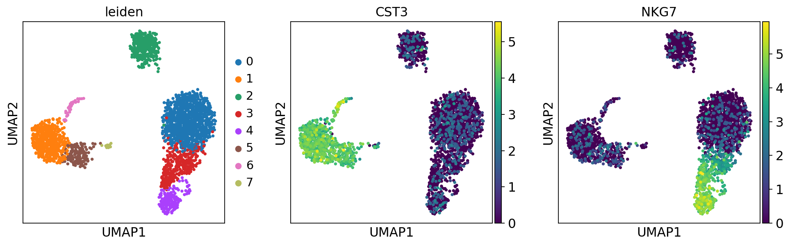

import numpy as np
import pandas as pd
import scanpy as sc# !mkdir data
# !wget http://cf.10xgenomics.com/samples/cell-exp/1.1.0/pbmc3k/pbmc3k_filtered_gene_bc_matrices.tar.gz -O data/pbmc3k_filtered_gene_bc_matrices.tar.gz
# !cd data; tar -xzf pbmc3k_filtered_gene_bc_matrices.tar.gz
# !mkdir writesc.settings.verbosity = 3 # verbosity: errors (0), warnings (1), info (2), hints (3)
sc.logging.print_header()
sc.settings.set_figure_params(dpi=80, facecolor='white')scanpy==1.6.1 anndata==0.7.5 umap==0.4.6 numpy==1.19.2 scipy==1.5.2 pandas==1.2.1 scikit-learn==0.23.2 statsmodels==0.12.1 python-igraph==0.8.3 leidenalg==0.8.3results_file = 'write/pbmc3k.h5ad' # the file that will store the analysis resultsadata = sc.read_10x_mtx(
'filtered_gene_bc_matrices/hg19/', # the directory with the `.mtx` file
var_names='gene_symbols', # use gene symbols for the variable names (variables-axis index)
cache=True) # write a cache file for faster subsequent reading... writing an h5ad cache file to speedup reading next timeadata.var_names_make_unique() # this is unnecessary if using `var_names='gene_ids'` in `sc.read_10x_mtx`adata.obs| n_genes | n_genes_by_counts | total_counts | total_counts_mt | pct_counts_mt | |
|---|---|---|---|---|---|
| AAACATACAACCAC-1 | 781 | 779 | 2419.0 | 73.0 | 3.017776 |
| AAACATTGAGCTAC-1 | 1352 | 1352 | 4903.0 | 186.0 | 3.793596 |
| AAACATTGATCAGC-1 | 1131 | 1129 | 3147.0 | 28.0 | 0.889736 |
| AAACCGTGCTTCCG-1 | 960 | 960 | 2639.0 | 46.0 | 1.743085 |
| AAACCGTGTATGCG-1 | 522 | 521 | 980.0 | 12.0 | 1.224490 |
| … | … | … | … | … | … |
| TTTCGAACTCTCAT-1 | 1155 | 1153 | 3459.0 | 73.0 | 2.110436 |
| TTTCTACTGAGGCA-1 | 1227 | 1224 | 3443.0 | 32.0 | 0.929422 |
| TTTCTACTTCCTCG-1 | 622 | 622 | 1684.0 | 37.0 | 2.197150 |
| TTTGCATGAGAGGC-1 | 454 | 452 | 1022.0 | 21.0 | 2.054795 |
| TTTGCATGCCTCAC-1 | 724 | 723 | 1984.0 | 16.0 | 0.806452 |
2700 rows × 5 columns
sc.pl.highest_expr_genes(adata, n_top=20, )normalizing counts per cell
finished (0:00:00)png
sc.pp.filter_cells(adata, min_genes=200)
sc.pp.filter_genes(adata, min_cells=3)filtered out 19024 genes that are detected in less than 3 cellsadata.var['mt'] = adata.var_names.str.startswith('MT-') # annotate the group of mitochondrial genes as 'mt'
sc.pp.calculate_qc_metrics(adata, qc_vars=['mt'], percent_top=None, log1p=False, inplace=True)sc.pl.violin(adata, ['n_genes_by_counts', 'total_counts', 'pct_counts_mt'],
jitter=0.4, multi_panel=True)
png
sc.pl.scatter(adata, x='total_counts', y='pct_counts_mt')
sc.pl.scatter(adata, x='total_counts', y='n_genes_by_counts')png
png
adata = adata[adata.obs.n_genes_by_counts < 2500, :]
adata = adata[adata.obs.pct_counts_mt < 5, :]sc.pp.normalize_total(adata, target_sum=1e4)normalizing counts per cell
finished (0:00:00)
view_to_actual(adata)sc.pp.log1p(adata)sc.pp.highly_variable_genes(adata, min_mean=0.0125, max_mean=3, min_disp=0.5)extracting highly variable genes
finished (0:00:00)
--> added
'highly_variable', boolean vector (adata.var)
'means', float vector (adata.var)
'dispersions', float vector (adata.var)
'dispersions_norm', float vector (adata.var)sc.pl.highly_variable_genes(adata)
png
adata.raw = adataadata = adata[:, adata.var.highly_variable]sc.pp.regress_out(adata, ['total_counts', 'pct_counts_mt'])regressing out ['total_counts', 'pct_counts_mt']
sparse input is densified and may lead to high memory use
finished (0:00:08)sc.pp.scale(adata, max_value=10)sc.tl.pca(adata, svd_solver='arpack')computing PCA
on highly variable genes
with n_comps=50
finished (0:00:00)sc.pl.pca(adata, color='CST3')png
sc.pl.pca_variance_ratio(adata, log=True)png
adata.write(results_file)adataAnnData object with n_obs × n_vars = 2638 × 1838
obs: 'n_genes', 'n_genes_by_counts', 'total_counts', 'total_counts_mt', 'pct_counts_mt'
var: 'gene_ids', 'n_cells', 'mt', 'n_cells_by_counts', 'mean_counts', 'pct_dropout_by_counts', 'total_counts', 'highly_variable', 'means', 'dispersions', 'dispersions_norm', 'mean', 'std'
uns: 'log1p', 'hvg', 'pca'
obsm: 'X_pca'
varm: 'PCs'sc.pp.neighbors(adata, n_neighbors=10, n_pcs=40)computing neighbors
using 'X_pca' with n_pcs = 40
finished: added to `.uns['neighbors']`
`.obsp['distances']`, distances for each pair of neighbors
`.obsp['connectivities']`, weighted adjacency matrix (0:00:01)sc.tl.umap(adata)computing UMAP
finished: added
'X_umap', UMAP coordinates (adata.obsm) (0:00:03)sc.pl.umap(adata, color=['CST3', 'NKG7', 'PPBP'])
png
sc.pl.umap(adata, color=['CST3', 'NKG7', 'PPBP'], use_raw=False)
png
sc.tl.leiden(adata)running Leiden clustering
finished: found 8 clusters and added
'leiden', the cluster labels (adata.obs, categorical) (0:00:00)sc.pl.umap(adata, color=['leiden', 'CST3', 'NKG7'])

png
adata.write(results_file)sc.tl.rank_genes_groups(adata, 'leiden', method='t-test')
sc.pl.rank_genes_groups(adata, n_genes=25, sharey=False)ranking genes
finished: added to `.uns['rank_genes_groups']`
'names', sorted np.recarray to be indexed by group ids
'scores', sorted np.recarray to be indexed by group ids
'logfoldchanges', sorted np.recarray to be indexed by group ids
'pvals', sorted np.recarray to be indexed by group ids
'pvals_adj', sorted np.recarray to be indexed by group ids (0:00:00)
png
sc.settings.verbosity = 2 # reduce the verbositysc.tl.rank_genes_groups(adata, 'leiden', method='wilcoxon')
sc.pl.rank_genes_groups(adata, n_genes=25, sharey=False)ranking genes
finished (0:00:03)png
adata.write(results_file)sc.tl.rank_genes_groups(adata, 'leiden', method='logreg')
sc.pl.rank_genes_groups(adata, n_genes=25, sharey=False)ranking genes
finished (0:00:05)
Increase the number of iterations (max_iter) or scale the data as shown in:
https://scikit-learn.org/stable/modules/preprocessing.html
Please also refer to the documentation for alternative solver options:
https://scikit-learn.org/stable/modules/linear_model.html#logistic-regression
n_iter_i = _check_optimize_result(
png
marker_genes = ['IL7R', 'CD79A', 'MS4A1', 'CD8A', 'CD8B', 'LYZ', 'CD14',
'LGALS3', 'S100A8', 'GNLY', 'NKG7', 'KLRB1',
'FCGR3A', 'MS4A7', 'FCER1A', 'CST3', 'PPBP']adata = sc.read(results_file)pd.DataFrame(adata.uns['rank_genes_groups']['names']).head(5)| 0 | 1 | 2 | 3 | 4 | 5 | 6 | 7 | |
|---|---|---|---|---|---|---|---|---|
| 0 | RPS12 | LYZ | CD74 | CCL5 | NKG7 | LST1 | HLA-DPA1 | PF4 |
| 1 | LDHB | S100A9 | CD79A | NKG7 | GNLY | FCER1G | HLA-DPB1 | SDPR |
| 2 | RPS25 | S100A8 | HLA-DRA | B2M | GZMB | AIF1 | HLA-DRA | GNG11 |
| 3 | RPS27 | TYROBP | CD79B | CST7 | CTSW | COTL1 | HLA-DRB1 | PPBP |
| 4 | RPS6 | FTL | HLA-DPB1 | IL32 | PRF1 | FCGR3A | CD74 | NRGN |
result = adata.uns['rank_genes_groups']
groups = result['names'].dtype.names
pd.DataFrame(
{group + '_' + key[:1]: result[key][group]
for group in groups for key in ['names', 'pvals']}).head(5)| 0_n | 0_p | 1_n | 1_p | 2_n | 2_p | 3_n | 3_p | 4_n | 4_p | 5_n | 5_p | 6_n | 6_p | 7_n | 7_p | |
|---|---|---|---|---|---|---|---|---|---|---|---|---|---|---|---|---|
| 0 | RPS12 | 4.803005e-219 | LYZ | 7.634876e-249 | CD74 | 3.043536e-182 | CCL5 | 2.841576e-120 | NKG7 | 1.203971e-96 | LST1 | 1.322111e-88 | HLA-DPA1 | 5.422417e-21 | PF4 | 4.722886e-10 |
| 1 | LDHB | 5.645430e-216 | S100A9 | 4.626358e-246 | CD79A | 6.860832e-170 | NKG7 | 2.045965e-96 | GNLY | 1.257170e-88 | FCER1G | 6.259712e-85 | HLA-DPB1 | 7.591860e-21 | SDPR | 4.733899e-10 |
| 2 | RPS25 | 3.358266e-195 | S100A8 | 1.622835e-238 | HLA-DRA | 8.389292e-166 | B2M | 1.480838e-82 | GZMB | 1.429027e-88 | AIF1 | 1.348814e-83 | HLA-DRA | 1.306768e-19 | GNG11 | 4.733899e-10 |
| 3 | RPS27 | 3.322679e-185 | TYROBP | 2.957652e-220 | CD79B | 1.171444e-153 | CST7 | 3.420909e-78 | CTSW | 4.144726e-87 | COTL1 | 5.974694e-82 | HLA-DRB1 | 1.865104e-19 | PPBP | 4.744938e-10 |
| 4 | RPS6 | 2.398577e-183 | FTL | 2.479195e-214 | HLA-DPB1 | 6.167786e-148 | IL32 | 3.687167e-73 | PRF1 | 1.692100e-85 | FCGR3A | 1.392377e-77 | CD74 | 5.853161e-19 | NRGN | 4.800511e-10 |
sc.tl.rank_genes_groups(adata, 'leiden', groups=['0'], reference='1', method='wilcoxon')
sc.pl.rank_genes_groups(adata, groups=['0'], n_genes=20)ranking genes
finished (0:00:01)
png
sc.pl.rank_genes_groups_violin(adata, groups='0', n_genes=8)png
sc.pl.rank_genes_groups_violin(adata, groups='0', n_genes=8)
png
sc.pl.violin(adata, ['CST3', 'NKG7', 'PPBP'], groupby='leiden')
png
new_cluster_names = [
'CD4 T', 'CD14 Monocytes',
'B', 'CD8 T',
'NK', 'FCGR3A Monocytes',
'Dendritic', 'Megakaryocytes']
adata.rename_categories('leiden', new_cluster_names)Omitting rank_genes_groups/names as old categories do not match.
Omitting rank_genes_groups/scores as old categories do not match.
Omitting rank_genes_groups/pvals as old categories do not match.
Omitting rank_genes_groups/pvals_adj as old categories do not match.
Omitting rank_genes_groups/logfoldchanges as old categories do not match.sc.pl.umap(adata, color='leiden', legend_loc='on data', title='', frameon=False, save='.pdf')WARNING: saving figure to file figures/umap.pdf
png
sc.pl.dotplot(adata, marker_genes, groupby='leiden');png
sc.pl.stacked_violin(adata, marker_genes, groupby='leiden', rotation=90);
png
adata.write(results_file, compression='gzip') # `compression='gzip'` saves disk space, but slows down writing and subsequent readingadata.raw.to_adata().write('./data/write/pbmc3k_withoutX.h5ad')